Elevation Data from Cloud-Optimized GeoTIFFs
Part 1: Shaded-Relief Techniques
The GeoTIFF specification (OGC, 2019) has long been recognized as a standard for distributing georeferenced imagery. But it is also an effective method for storing numerical information such as surface elevation and other geophysical data. The U.S. Geological Survey (USGS) provides an extensive collection of medium, high, and very high resolution data products through various government projects including the Cloud Optimized GeoTIFF (COG) initiative (USGS, 2019).
Virtually all Geographic Information Systems (GIS) support GeoTIFF files. But even if you don’t have access to a GIS system, you can still access data from GeoTIFFs. There are multiple APIs in many different development environments that exist to provide access to these valuable resources.
Recently, the open-source Apache Commons Imaging project extended their software library to provide data retrieval routines for GeoTIFFs that contain floating-point data. This new feature gives software developers a tool for accessing both traditional imagery and numerical products such as elevations from Cloud Optimized GeoTIFF products.
TIFF image products, and GeoTIFFs in particular, have a reputation for complexity. But while working with GeoTIFFs can be daunting at first, they aren’t that bad once you understand a few underlying concepts. So, to help make GeoTIFF products more accessible to software developers and other users, these notes provide an introduction to the basic ideas of the GeoTIFF format. And to reinforce those ideas with a practical example, they also introduce a demonstration application called DemoCOG. The example application uses the Apache Commons Imaging API and Cloud Optimized GeoTIFF elevation data to create shaded-relief imagery of the Earth’s terrain. The source code for DemoCOG is available for inspection and use at the Gridfour open-source software project.
This articles covers a lot of material, including a discussion of the USGS products, some background on the GeoTIFF standard, and an introduction to the algorithms for shaded-relief rendering. If you want, you can jump to the sections of interest using the following links.
Let’s take a look at what the USGS products have to offer. The picture below is a shaded-relief rendering of elevation data for part of Riverside County in Southern California. It includes the San Jacinto Mountains, the towns of Beaumont and Palm Springs, and the Coachella Valley. The sample area runs about 100 kilometers (60 miles) north and south and 85 kilometers (50 miles) east and west.
The level of detail in the San Jacinto Mountains image is especially striking when you consider that it is only a reduced-scale version of the original. In order to fit in on this page, we needed to shrink it down by a factor of 12. To give a better sense of the quality of the source data, the figure below shows a close-up view of the image rendered at its full resolution. The figure shows a small section of the overall data set taken from the lower-right corner of the image. The lake and river features are derived from a surface-water Shapefile. But the road features and building footprints that are visible in the image are derived purely from the elevation data. Their presence gives some idea of the true resolution of the USGS data set.
Both images shown above were rendered using a technique called shaded-relief. The algorithm used to produce the effect is described below. The color techniques used for the second image are discussed in Part 2 of this series of articles..
With a raster spacing of one-third second of arc, we would expect a one-degree square grid to have 10800-by-10800 cells. The Cloud Optimized GeoTIFF products include 12 extra rows and columns of grid cells. These extra cells overlap adjacent data areas. So the true upper-left corner of the San Jacinto sample is not 34N/117W, but is actually a small distance to its northwest. This overlap is intended to ensure continuity when performing surface analysis and rendering. More detail on this design choice is provided below (see What makes it an optimized GeoTIFF?).
The Tagged Image File Format (TIFF) is an unusual graphics format in that it can bundle imagery and grid-based data as well as extensive metadata all in a single file. In fact, TIFF files frequently contain multiple images, each of which can have a different data representation and color model. This flexibility means that there can be quite a lot of variation in organization from TIFF to TIFF or, by extension, from GeoTIFF to GeoTIFF. Most GeoTIFFs contain imagery products such as aerial photographs or digital maps. But the US Geological Survey’s elevation GeoTIFF products don’t include any imagery at all. Instead, they provide a grid of floating-point elevation values.
In order to manage multiple images in a single file, a TIFF file is organized into elements called Image File Directories (IFD). Each “directory” is simply a collection of bytes that can contain one image or raster data set and numerous metadata elements. The US Geological Survey’s Cloud Optimized GeoTIFF elevation data product is actually a collection of multiple directories. The first directory in the file contains the full-resolution master data set, which includes 10812-by-10812 raster data cells for the San Jacinto sample region. The rest of the directories provide “overview” data sets which repeat the content at progressively reduced resolutions and image sizes. This treatment is analogous to a file that contains a full-size image followed by a set of “thumbnails” for ready reference. For our purposes, we are interested only in the first directory.
The Apache Commons Imaging library has a simple, high-level API for reading images from a TIFF file and a slightly more advanced API for reading directories. Since both data and metadata are tied to TIFF directories, reading a GeoTIFF requires this second API. Although a line-by-line examination of the API is outside the scope of this document, you can find well-documented sample code in the DemoCOG application that shows how to access individual directories, raster elevation data, and the supporting metadata needed to map the elevation samples to real-world locations.
As noted above, the raster data set for the Cloud Optimized GeoTIFF is quite large. It includes 10812 rows and columns, or over 100 million data values. In-memory storage for such a large data set requires nearly half a gigabyte. While an application could read the entire image into memory, it wouldn’t leave a lot of room for other images or data processing. In practice most application developers would prefer to read the source data a piece at a time for processing. Fortunately, a design for efficient piecewise access is just what the “optimized” in Cloud Optimized GeoTIFF is all about. And any reasonably complete software library, such as the Commons Imaging API, will be able to take advantage of this organization to support memory-conserving access of large images.
The TIFF file format has been around for a long time. And even though it has been superseded by more modern standards (JPEG, PNG, etc.), it persists in niche applications such as GeoTIFF because it provides excellent support for metadata.
The key thing to recognize about a GeoTIFF is that virtually every pixel in the image (or every raster cell in an elevation data set) maps directly to a location on the face of the earth. The metadata attached to a GeoTIFF is what makes this mapping possible. It also allows us to correlate GeoTIFF products with data from other sources. For example, the picture below shows a section of the shaded-relief imagery from the USGS GeoTIFF overlaid with a set of road data from a completely independent data source, the TIGER/Line roads Shapefile (U.S. Census Bureau, 2019). The fact that the imagery from the GeoTIFF fits so neatly with the line data from the Shapefile is due in large part to the metadata that was bundled with the GeoTIFF.
The metadata in a TIFF file include sets of data primitives (integer, floating-point, and ASCII text elements) which are identified by numeric “tags” that allow software applications to access them. Some tags, such as 256 (Image Width) and 257 (Image Height), describe basic parameters from image-processing. These tags, which are defined in the TIFF specification (Adobe 1992), also include elements such color model and data format that could can be found in many other graphics formats. But the real advantage of the TIFF specification is that it permits applications to add their own custom tags to TIFF files. The GeoTIFF specification (OGC, 2019) identifies the following custom elements that are used in Cloud Optimized GeoTIFF products
| Tag | Type | Description |
| GeoKeyDirectoryTag (34735) | Short Integer [4xN] | N sets of 4 elements (key, reference, length, value/position) that provide either integer codes for single-valued options or references to other tags for non-integral specifications. |
| GeoDoubleParamsTag (34736) | Double [N] | N parameters given as double-precision floating-point values, including Earth radius, flattening, etc. |
| GeoAsciiParamsTag (34737) | ASCII [N] | N characters forming ASCII strings. |
| ModelTiepointTag (33922) | Double [6xN] | N sets of 6 elements (i, j, k, x, y, z), associating raster or pixel coordinates (i, j, j) to Cartesian “model” coordinates (x, y, z). In the GeoTIFF raster space, the i coordinate refers to column and the j coordinate refers to row. For rotated or distorted images, multiple tie points may be required. Only one tiepoint is used for Cloud Optimized GeoTIFF products. |
| ModelPixelScaleTag (33550) | Double [3] | 3 elements (x, y, z) given equivalent distance between pixels (x, y, z). |
The key specification in a GeoTIFF is the GeoKeyDirectoryTag. This tag provides overall metadata elements for the GeoTIFF product and also serves as a kind of table of contents for additional information stored in the associated GeoDoubleParamsTag and GeoAsciiParamsTag. The table below shows the elements from the San Jacinto GeoTIFF file. In places where the ref column has a non-zero value, the elements in the directory tag refer to other tags and the value/pos column indicates a starting position within those tags. In places where the ref column has a zero, parameters are supplied directly in the value/pos column. As an aid, I’ve added some descriptive comments to each entry.
key ref len value/pos Identifier -- description
1 1 0 8 GeoTIFF version indicator
1024 0 1 2 GTModelTypeGeoKey -- Geographic Coordinate System
1025 0 1 1 GtRasterTypeGeoKey -- Pixel is area
2048 0 1 4269 GeographicTypeGeoKey -- Datum is NAD83
2049 34737 6 0 GeogCitationKey -- Authorship notes
2054 0 1 9102 GeogAngularUnitsGeoKey -- Angular degrees
2057 34736 1 1 GeogSemiMajorAxisKey –- Equatorial radius of Earth
2059 34736 1 0 GeogInvFlatteningGeoKey –- Flattening of spherioid
2062 34736 3 2 TOWGS84GeoKey -- “To WGS84” transformation data
For our purposes, the most interesting element in the GeoKeyDirectoryTag is the entry for key 1024, GTModelTypeGeoKey. The code value 2 given for this entry indicates that the GeoTIFF is tied to a Geographic Coordinate System (GCS). In other words, the associated Earth-surface coordinates for each pixel are given in the form of latitude and longitude coordinates. Geographic coordinates are the simplest system available for GeoTIFFs. When a GeoTIFF uses geographic coordinates, the only elements we need in order to interpret the pixel positions are the ModelTiepointTag and ModelPixelScaleTag.
In the GeoTIFF specification, coordinates defining the column and row of image pixels or raster cells are referred to as “Raster Coordinates”. The corresponding real-valued coordinates related to geographic locations are referred to as “Model Coordinates”. The ModelTiepointTag and ModelPixelScaleTag provide the parameters that permit us to transform from one system to the other.
Let’s take a look at the parameters extracted from USGS_13_n34w117.tif.
ModelTiepointTag
0. 0.000000000
1. 0.000000000
2. 0.000000000
3. -117.000555556
4. 34.000555556
5. 0.000000000
ModelPixelScaleTag
0. 9.2592592692e-05
1. 9.2592592692e-05
2. 0.0000000000e+00
A “tiepoint” is gives the position of a single point in in the GeoTIFF using both the raster and model coordinate systems. Thus it ties the two coordinate systems together. You may have noticed that tiepoint values for entries 3 and 4 give values very close to the longitude (-117) and latitude (34) of the upper-left corner of the survey area. GeoTIFF files may include multiple tiepoints, but the USGS files use only a single point taken at the upper-left corner of the image or raster. The first 3 parameters in the ModelPixelTiepointTag are the i, j, and k coordinates for the raster coordinate system and specify, respectively, the column, row, and an unused third-axis coordinate for the tiepoint. The column is specified by the variable i, not j as it is in many other graphics applications. Although the coordinates (i, j, k) extracted here are all zero, those values are not necessarily always the case. The second three parameters in the ModelPixelTiepointTag are the model coordinates x, y, and z. The z coordinate is not used and always set to zero. The tiepoint coordinates are not quite integral values because the USGS data actually includes 6 rows and columns that overlap adjacent one degree squares.
The ModelPixelScaleTag gives the interval between raster columns and rows in the horizontal and vertical direction (again, for this product, z is not used). Because the USGS Cloud Optimized GeoTIFFs use geographic coordinates, the interval is an angular measure, in this case corresponding to one third second of arc. One second of arc is 1/3600 of a degree. So 1/3rd of a second is 1/10800 of a degree or 9.259259269e-05 degrees which is the value that shows up in the ModelPixelScale specification. A one degree grid would include 10800 rows and columns but, again, the Cloud Optimized GeoTIFF rasters cover slightly more than one degree and have an additional 6 rows or columns of overlap on each side.
Because the rows in the USGS GeoTIFF run north to south, the Y coordinates in the model coordinate system decrease as the raster (row) coordinates increase. So it would be natural to expect the delta-Y value in the ModelPixelScaleTag to be given as a negative number. By long-standing convention, however, they are given as positive values.
Armed with these facts, we can specify the following relationships:
Where
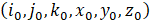 are the tiepoint specifications from the source file
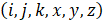 are the coordinates for an arbitrary point of interest in the raster
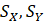 are the scaling factors from the ModelPixelScaleTag
Then
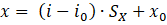
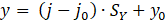
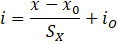
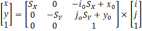
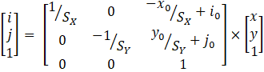
The matrix form is useful because it is easily coded using Java’s AffineTransform class (or similar elements in other development environments). An affine transform is just a matrix-based operation that performs a scaling and offset adjustment to a feature’s coordinates. In the case of the Cloud Optimized GeoTIFFs, the transform provides a convenient way for applications to map geographic coordinates (longitude and latitude given by the variables x and y) to raster coordinates (i and j), or vice versa.
Earlier, I mentioned that for the San Jacinto sample, the row spacing was about 10.3 meters while the column spacing was only 8.5 meters. Even though the angular spacing between rows and columns is the same (one-third second of arc), the equivalent real-world distance between raster columns is reduced because the distance between lines-of-longitude changes as a function of latitude. At the equator, longitude lines are 60 nautical miles apart. At the poles, they converge to a single point. If we wish the shape of features depicted in the image to be reasonably faithful to their actual shape on the surface of the Earth, we need to account for this narrowing tendency. Thus, when building a shaded-relief image, the overall shape of the image is narrowed to reflect the convergence of the meridians. Although the horizontal spacing changes at each row, we simplify things by approximating the spacing using an adjustment based on the cosine of the latitude for the middle row (33.5 North ).
The shaded-relief effect is accomplished by combining elevation data with a simple diffuse illumination model. In the model, we assume that the scene is illuminated by a light source at sufficient distance so that all incident rays of light can be treated as parallel. We also assume that the surface scatters incoming light equally in all directions so that the reflect light reaches the viewer’s eye with equal intensity no matter what direction it is viewed from. So, the only factor governing the intensity of illumination is the cosine of the angle between the surface and the incoming light (“Lambertian Reflectance”, n.d.). We can compute this cosine by taking the dot product of the unit vector normal (perpendicular) to the surface and a vector pointing in the direction of the light source. At angles greater than 90 degrees, we assume that the surface receives no direct illumination from the light source. To prevent these “backside” features from going completely dark, the model assumes an application-specified amount of ambient lighting that provides uniform illumination in all directions.
Note: Be a little careful if you search the Internet for more information on diffuse lighting models. When I was researching that topic for this article, I encountered at least two malicious web sites.
Although the lighting model described above is reasonably correct, it often produces disappointing results when working with elevation data. It turns out that the naturally occurring slopes on the surface of the Earth tend to not be steep enough to produce very dramatic lighting effects. In order to produce the shaded-relief image shown above, the DemoCOG application actually exaggerates slope by multiplying it by an arbitrary factor of five. The effects of this exaggeration can be seen in the two image panels below. The panel on the left is a reduced-scale version of the image that was shown at the beginning of this article. It includes the fivefold exaggeration factor. The panel on the right is the results of the same data using the same lighting model, but without the factor-of-five multiplication.
Coding a diffuse lightning model is easy provided that we have a way of computing the surface normal at each pixel position. The DemoCOG application uses a B-Spline interpolation class that is included in the Gridfour software distribution. For our purposes, the interpolator does double duty. First, it provides a way to narrow the image. Because we reduce its width by 83% (from 10812 to 9015 pixels), we need to partially merge values from multiple raster data cells and obtain interpolated values for the elevations at positions that do not match those in the original input. The B-Spline interpolation is based on computing the coefficients for a third degree polynomial from 4 data samples. Thus each interpolation carries information from multiple data samples and provides a reasonable way of merging values when the spacing across each row is compressed. As a bonus, the derivatives of the B-Spline interpolating polynomial are easily computed. These derivatives give us the slope of the surface in the directions of the northern axis (the vertical) and the eastern axis (horizontal). These slopes can be used to compute the unit normal vector to the surface at the interpolation point.
Let 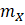 and 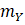 be the slopes of the elevation surface in the directions of the x and y axes. If we wish we may apply an arbitrary exaggeration factor to these values as described above (in which case the values for the slopes would be adjusted, but the algebra below would not change). Because the slopes are computed in the direction of the two coordinate axes, vectors tangent to the surface at the point where they are computed are given by
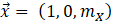
And
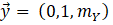
The unit normal vector to the surface is computed from the cross product of the tangent vectors:
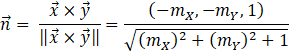
The diffuse reflection model (Lambertian reflectance) computes intensity of illumination based on the cosine of the angle between the surface normal vector and a vector pointing toward the illumination source. For the images shown above, we placed the light source in the northwest direction with an elevation of 60 degrees above the horizon. We used that information to construct a unit vector 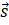 pointing toward the illumination source. So the cosine of the angle between the surface normal and the illumination vector is just the dot product:
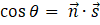
When the surface normal is pointing more than 90 degrees away from the light source, we assume that the feature is entirely in shadow and is illuminated only by ambient lighting. For the ambient lighting effect, we define a factor a given as a value in the range 0.0 (no ambient lighting) to 1.0 (fully ambient lighting), the computation for the illumination coefficient L at a point on the modeled surface is just
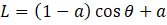
The value of L is in the range 0 to 1. When building the shaded-relief rendering, we simply multiply the RGB values for each pixel by its corresponding illumination coefficient.
There are two aspects of the USGS's elevation GeoTIFF products that are optimized for use in cloud-based applications. First, the files are organized in sub-sections (internal tiles) of 256-by-256 raster cells, each of which can be accessed independently as needed. This feature provides the ability for applications to extract only the subset of the image that it needs for rendering. It is particularly useful when zooming-in to a detail (such as the view of the Salton Sea shown in Figure 2 above). It is also useful when constructing a picture for an area that overlaps more than a single one-degree file and must be stitched together using pieces from multiple files.
The second optimizing element is the overlap from one-degree file to the next. Earlier in this article we mentioned that even though the one-third second of arc resolution of the Cloud-Optimized GeoTIFF products would result in a 10800-by-10800 raster grid for a one-degree tile, the actual resolution was 10812-by-10812. Each file in the Cloud-Optimized GeoTIFF offerings provides 6 rows and columns of overlap with each of its neighbors. This overlap permits an application to create images from two separate, adjacent one-degree areas so that the transition between images appears seamless when they are placed side-by-side. The slope computations that were described above combine a four-by-four set of neighboring elevation data cells in order to compute slope in the easterly and northerly directions. By providing data with a small overlap, the Cloud-Optimized GeoTIFF products avoid any edge-effects or discontinuities at the edge of a one-degree square. For shaded-relief purposes, we are concerned with first-derivative continuity. Some applications require second-derivative continuity and may benefit from having 6 full rows of overlap.
In Part 1 of this series, we covered the basics of reading elevation information from a cloud optimized GeoTIFF. We touched on the way GeoTIFFs use metadata to tie their data and imagery to real-world locations. And we introduced the algorithms used to create shaded-relief rendering from numeric elevations data.
So far, most of our pictures have been in black-and-white. You may be wondering about ways to add color to elevation-derived imagery. In Part 2 of this series, we will show how an application can use color to contribute information about land-cover and environment to shaded-relief renderings. To do so, we use a kind of GeoTIFF that is much different than the elevation GeoTIFFs we’ve discussed so far. The land-cover GeoTIFFs include conventional imagery (colored pixels) rather than elevation samples. Also, they are based on a projected coordinate system that maps the surface of the Earth to a plane rather than the spheroid-based geographic coordinate system that was used for the USGS GeoTIFFs. Working with these two kinds of GeoTIFF product will give a well-rounded introduction to this technology.
Apache Software Foundation. (2020). Commons Imaging: a Pure-Java Image Library. Retrieved May 2020 from https://commons.apache.org/proper/commons-imaging/.
Lambertian Reflectance. (n.d.). In Wikipedia. Retrieved June, 2020, from https://en.wikipedia.org/wiki/Lambertian_reflectance
Open Geospatial Consortium [OGC]. (2019). OGC GeoTIFF Standard. Accessed May 2020 from http://docs.opengeospatial.org/is/19-008r4/19-008r4.html. See also PDF document accessed May 2020 from https://cdn.earthdata.nasa.gov/conduit/upload/12428/19-008r4.pdf
Patterson, Tom. (2019). Shaded Relief. Website accessed December 2020 from http://www.shadedrelief.com/.
U.S. Census Bureau. (2019). Tiger/Line® Shapefiles: Roads. Website accessed May 2020 from https://www.census.gov/cgi-bin/geo/shapefiles/index.php?year=2019&layergroup=Roads
U.S. Geological Survey [USGS]. (2019). USGS Digital Elevation Models (DEM) Switching to New Distribution Format. Retrieved May, 2020 from https://www.usgs.gov/news/usgs-digital-elevation-models-dem-switching-new-distribution-format
The following pages discuss the shaded-relief algorithm. They provide tutorials, example images, and additional links to useful data sources.
The USGS Cloud Optimized GeoTIFF elevation data sources are located at the following sites: